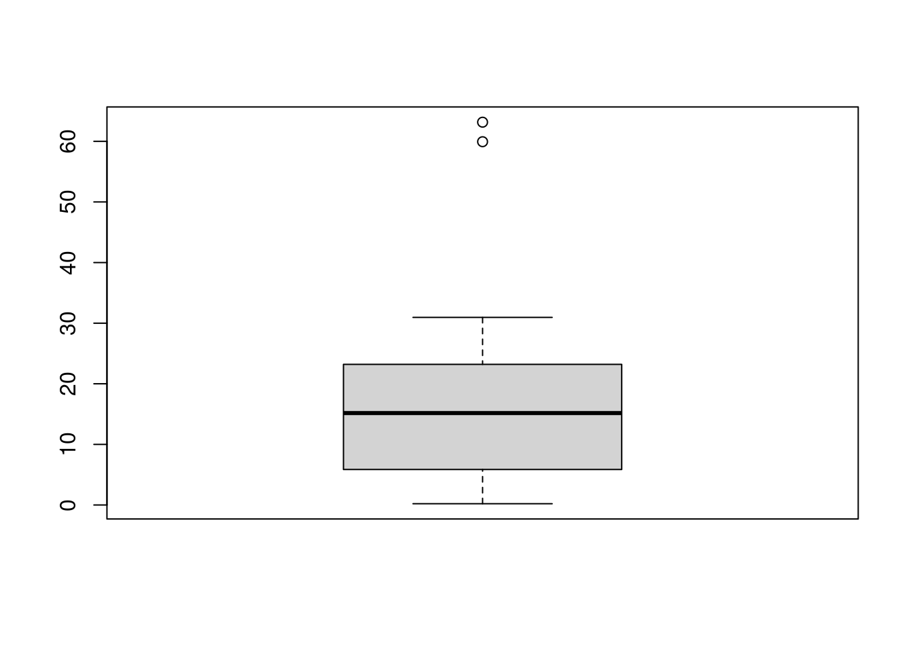
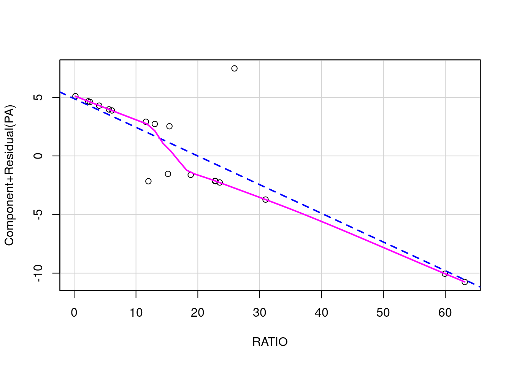
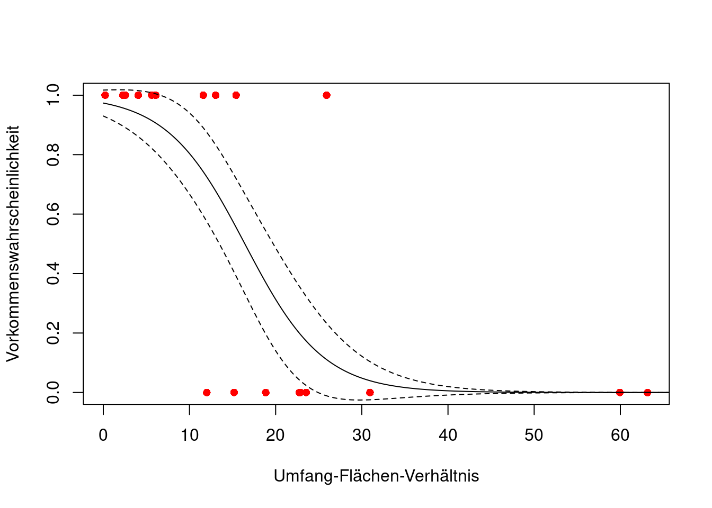

...1 ISLAND RATIO PA
Min. : 1.0 Length:19 Min. : 0.21 Min. :0.0000
1st Qu.: 5.5 Class :character 1st Qu.: 5.86 1st Qu.:0.0000
Median :10.0 Mode :character Median :15.17 Median :1.0000
Mean :10.0 Mean :18.74 Mean :0.5263
3rd Qu.:14.5 3rd Qu.:23.20 3rd Qu.:1.0000
Max. :19.0 Max. :63.16 Max. :1.0000
Man erkennt, dass polis 19 Beobachtungen von drei Parametern enthält, wobei ISLAND ein Faktor mit den Inselnamen ist, während RATIO metrisch ist und PA nur 0 oder 1 enthält. Prädiktorvariable ist RATIO, abhängige Variable PA, mithin ist das korrekte statistische Verfahren eine logistische Regression (GLM).
# Explorative Datenanalyseboxplot(polis$RATIO)

Der Boxplot zeigt zwei starke Ausreisser, ist also etwas rechtsschief. Da es sich aber um die unabhängige Variable handelt, muss uns das nicht weiter stören.
# Definition des logistischen Modellsglm.1<-glm(PA ~ RATIO, family ="binomial", data = polis)summary(glm.1)
Call:
glm(formula = PA ~ RATIO, family = "binomial", data = polis)
Deviance Residuals:
Min 1Q Median 3Q Max
-1.6067 -0.6382 0.2368 0.4332 2.0986
Coefficients:
Estimate Std. Error z value Pr(>|z|)
(Intercept) 3.6061 1.6953 2.127 0.0334 *
RATIO -0.2196 0.1005 -2.184 0.0289 *
---
Signif. codes: 0 '***' 0.001 '**' 0.01 '*' 0.05 '.' 0.1 ' ' 1
(Dispersion parameter for binomial family taken to be 1)
Null deviance: 26.287 on 18 degrees of freedom
Residual deviance: 14.221 on 17 degrees of freedom
AIC: 18.221
Number of Fisher Scoring iterations: 6
Modell ist signifikant (p-Wert in Zeile RATIO ist < 0.05). Jetzt müssen wir noch prüfen, ob es auch valide ist:
# Modelldiagnostik für das gewählte Modell (wenn nicht signifikant, dann OK)1-pchisq(glm.1$deviance, glm.1$df.resid)
[1] 0.6514215
# Visuelle Inspektion der Linearitätlibrary("car")crPlots(glm.1, ask = F)

Beide Aspekte sind OK, d.h. der Test war nicht signifikant und die pinkfarbene Linie liegt fast auf der theoretischen Linie (blau gestrichelt).
Jetzt brauchen wir noch die Modellgüte (Pseudo-R2):
Um zu unser Modell zu interpretieren müssen wir noch in Betracht ziehen, dass wir nicht die Vorkommenswahrscheinlichkeit selbst, sondern logit (Vorkommenswahrscheinlichkeit) modelliert haben. Unser Ergebnis (die beiden Parameterschätzungen von oben, also 3.6061 und -0.2196) muss also zunächst in etwas Interpretierbares übersetzt werden:
# Steilheit der Beziehung in Modellen mit nur einem Parameterexp(glm.1$coef[2])
RATIO
0.8028734
< 1, d. h. Vorkommenswahrscheinlichkeit sinkt mit zunehmender Isolation.
# LD50 für 1-Parameter-Modelle (hier also x-Werte, bei der 50% der Inseln besiedelt sind)-glm.1$coef[1] / glm.1$coef[2]
(Intercept)
16.4242
Am besten stellen wir auch unsere Funktionsgleichung dar. Dazu müssen wir das „Rohergebnis“ (mit P = Vorkommenswahrscheinlichkeit)
Das ist also unsere vorhergesagte Regressionsfunktion, die wir in einem letzten Schritt auch noch visualisieren können (und sollten):
# Ergebnisplotspar(mfrow =c(1, 1))xs <-seq(0, 70, l =1000)glm.predict <-predict(glm.1, type ="response", se = T, newdata =data.frame(RATIO = xs))plot(PA ~ RATIO, data = polis, xlab ="Umfang-Flächen-Verhältnis", ylab ="Vorkommenswahrscheinlichkeit", pch =16, col ="red")points(glm.predict$fit ~ xs, type ="l")lines(glm.predict$fit + glm.predict$se.fit ~ xs, type ="l", lty =2)lines(glm.predict$fit - glm.predict$se.fit ~ xs, type ="l", lty =2)

Quellcode
---date: 2023-11-07lesson: Stat4thema: Komplexere Regressionsmethodenindex: 3format: html: code-tools: source: trueknitr: opts_chunk: collapse: false---# Stat4: Lösung 4.2N- Download dieses Lösungsscript via "\</\>Code" (oben rechts)- [Lösungstext als Download](Statistik_Loesung_4.2N.pdf)## Musterlösung Aufgabe 4.2N: Multiple logistische Regression```{r}library("readr")polis <-read_delim("datasets/stat1-4/polis.csv", ",")polisstr(polis)summary(polis)```Man erkennt, dass polis 19 Beobachtungen von drei Parametern enthält, wobei ISLAND ein Faktor mit den Inselnamen ist, während RATIO metrisch ist und PA nur 0 oder 1 enthält. Prädiktorvariable ist RATIO, abhängige Variable PA, mithin ist das korrekte statistische Verfahren eine logistische Regression (GLM).```{r}# Explorative Datenanalyseboxplot(polis$RATIO)```Der Boxplot zeigt zwei starke Ausreisser, ist also etwas rechtsschief. Da es sich aber um die unabhängige Variable handelt, muss uns das nicht weiter stören.```{r}# Definition des logistischen Modellsglm.1<-glm(PA ~ RATIO, family ="binomial", data = polis)summary(glm.1)```Modell ist signifikant (p-Wert in Zeile RATIO ist < 0.05). Jetzt müssen wir noch prüfen, ob es auch valide ist:```{r}# Modelldiagnostik für das gewählte Modell (wenn nicht signifikant, dann OK)1-pchisq(glm.1$deviance, glm.1$df.resid)# Visuelle Inspektion der Linearitätlibrary("car")crPlots(glm.1, ask = F)```Beide Aspekte sind OK, d.h. der Test war nicht signifikant und die pinkfarbene Linie liegt fast auf der theoretischen Linie (blau gestrichelt).Jetzt brauchen wir noch die Modellgüte (Pseudo-R2):```{r}# Modellgüte (pseudo-R²)1- (glm.1$dev / glm.1$null)```Um zu unser Modell zu interpretieren müssen wir noch in Betracht ziehen, dass wir nicht die Vorkommenswahrscheinlichkeit selbst, sondern logit (Vorkommenswahrscheinlichkeit) modelliert haben. Unser Ergebnis (die beiden Parameterschätzungen von oben, also 3.6061 und -0.2196) muss also zunächst in etwas Interpretierbares übersetzt werden:```{r}# Steilheit der Beziehung in Modellen mit nur einem Parameterexp(glm.1$coef[2])```< 1, d. h. Vorkommenswahrscheinlichkeit sinkt mit zunehmender Isolation.```{r}# LD50 für 1-Parameter-Modelle (hier also x-Werte, bei der 50% der Inseln besiedelt sind)-glm.1$coef[1] / glm.1$coef[2]```Am besten stellen wir auch unsere Funktionsgleichung dar. Dazu müssen wir das „Rohergebnis“ (mit P = Vorkommenswahrscheinlichkeit)ln (P/ (1- P)) = 3.606 – 0.220 RATIOso umformen, dass wir links nur P stehen haben:P = exp (3.606 – 0.220 RATIO) / (1 + exp (3.606 – 0.220 RATIO))Das ist also unsere vorhergesagte Regressionsfunktion, die wir in einem letzten Schritt auch noch visualisieren können (und sollten):```{r}# Ergebnisplotspar(mfrow =c(1, 1))xs <-seq(0, 70, l =1000)glm.predict <-predict(glm.1, type ="response", se = T, newdata =data.frame(RATIO = xs))plot(PA ~ RATIO, data = polis, xlab ="Umfang-Flächen-Verhältnis", ylab ="Vorkommenswahrscheinlichkeit", pch =16, col ="red")points(glm.predict$fit ~ xs, type ="l")lines(glm.predict$fit + glm.predict$se.fit ~ xs, type ="l", lty =2)lines(glm.predict$fit - glm.predict$se.fit ~ xs, type ="l", lty =2)```